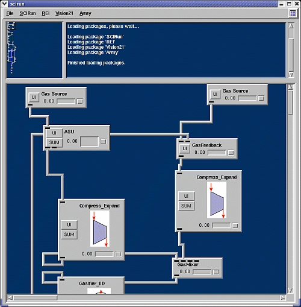

| SCIRun is divided into three frames. The NetEdit frame is the large field located on the bottom of the screen where networks of modules are constructed. Since the NetEdit frame can grow to exceed the bounds of viewable area, the GlobalView frame in the top left corner shows which part of the NetEdit frame is currently being viewed. The Error frame in the top right corner will report any errors detected during startup. Each network is made up of a series of modules--each representing a separate plant process or unit. For a detailed description of each module's function see the REI and Vision 21 Module Index . For more detailed documentation about SCIRun see the Scientific Computing and Imaging Institute's Tutorial. |
 |
The REI Vision 21 Workbench offers a complete package of SCIRun-compatible modules. For a detailed description of each module's function and capabilities, see the Vision 21 Module Index.
SCIRun: A Scientific Computing Problem Solving Environment. Scientific Computing and Imaging Institute (SCI), http://software.sci.utah.edu/scirun.html, 2002.